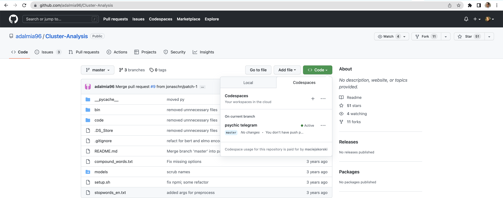
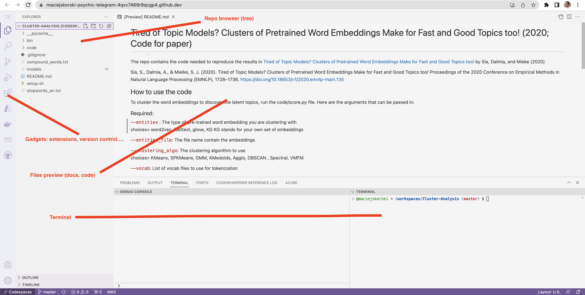
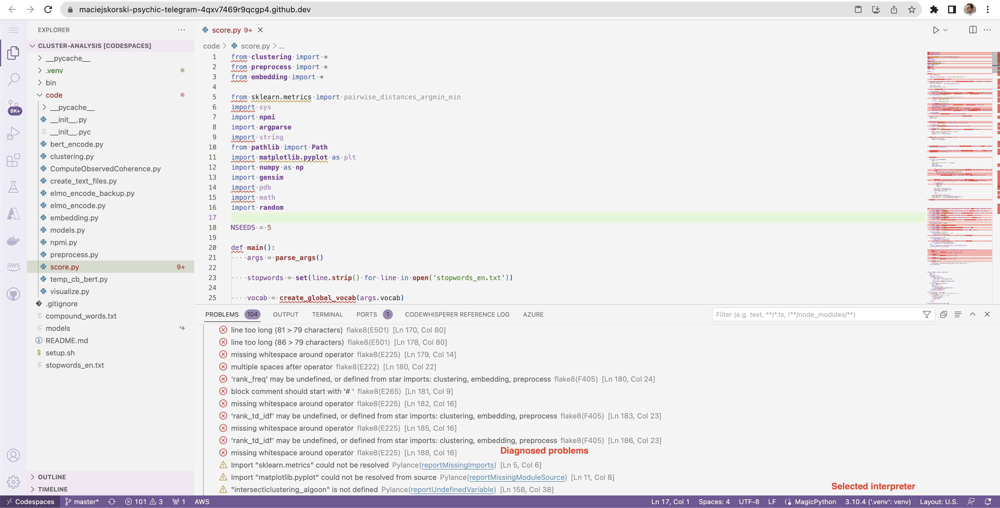
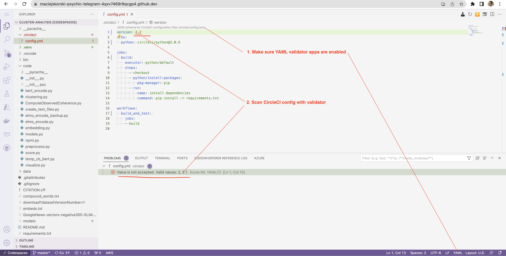
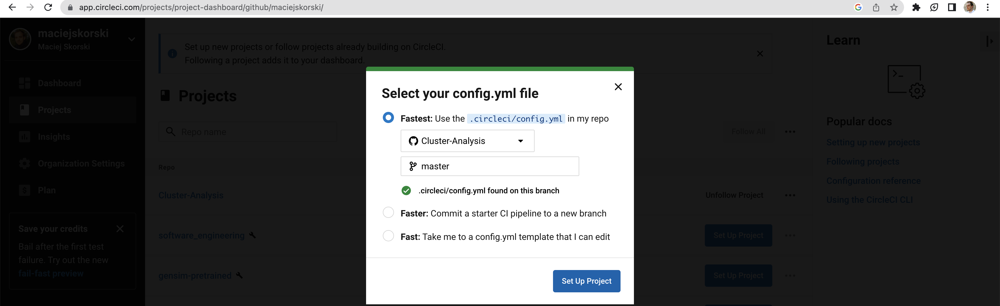
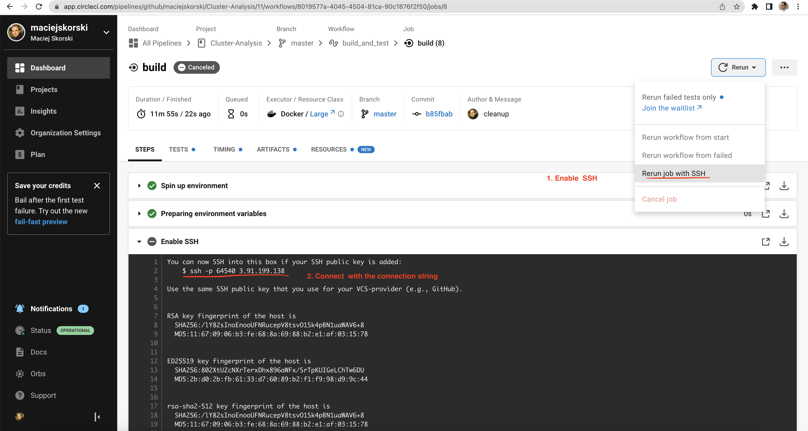
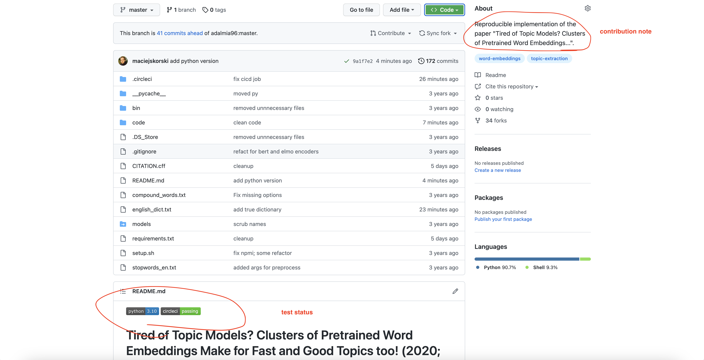

Class 2: Advanced Debugging#
Development in Cloud#
Recently GitHub launched cloud-powered developent environments called Codespaces.
The environment can be created for every repo and is available as a Codespaces tab under the green button Code.

The environment, once built, looks like in the figure below (resembling VS Code).

Static Code Analysis: Fixing Machine-Learning Repo (Case Study)#
We will use static code analysis to fix reproducibility problems of an implementation from a major NLP conference.
Note: the instruction below assume the use of VS Code locally / Codespaces remote, but you may adapt it to an IDE of your choice.
Fork https://github.com/maciejskorski/Cluster-Analysis and open in Codespaces. Create and activate a virtual environment in the repo root directory:
python -m venv .venv
source .venv/bin/activate
Select this version .venv/bin/python as the active Python interpreter in the code editor.
Check settings.json of the editor to ensure that Python linters are enabled.
Open the main file: code/score.py, you should see about 100 problems reported by Python linters.

Some issues are opinionated (formatting), some are breaking (missing imports in view of no install instructions).
You can also run pylint --errors-only --recursive=y code to scan the whole code base.
Note
When working with Python apps, double-check that the right environment is enabled.
Fix the reposity only up to the point when the basic call runs:
python code/score.py --clustering_algo KMeans --entities word2vec --vocab vocab.txt
Try to fix critical issues by adding missing packages to the environment with pip install <missing_package>.
Note
To avoid out-of-memory issues, consider the following optimizations:
comment out huge modules not used for this call, such as
tensorfloworfasttextadapt the code to work with a smaller GoogleNews model
For meaningful results, store an English dictionary in vocab.txt (for instance, copy the content of /usr/share/dict/words).
Once the command runs successfuly, you should see the topics/keywords proposed by the algorithm, similar to:
-0.3393 interface systems software devices hardware device technology components adapter computer
-0.57277 guess suppose thought damn stupid thinking yeah thing anymore afraid
-0.2009 wanted attempting unable hoping failed decided intended needed forced supposed
-0.4871 specific larger actual significant limited additional smaller multiple similar major
-0.74313 services operations business management agency organization service development company communications
-0.55365 discussion comments answers responses conclusions questions answer explanation suggestions recommendations
-0.40731 means simply reasoning implies context necessarily logic meaning sense essence
-0.14021 game play games season score playing league played team match
-0.76696 turned brought moved stuck thrown left leaving coming arrived caught
-0.39309 government religious religion democracy society political morality religions military citizens
-0.33467 children mother parents child kids patients doctor family father people
-0.34227 good great easy nice difficult decent perfect tough important excellent
-0.12439 give bring provide make accept find apply ignore obtain choose
-0.45445 inside front side line corner back wall edge rear angle
-0.8108 noted acknowledged suggested mentioned cited revealed stated referred confirmed presented
-0.65448 divine eternal evil humanity heaven gods soul lord scriptures scripture
-0.52838 north area south east west town city highway southern northern
-0.60428 costs rates prices rate cost price increases increase higher demand
0.10042 pages text copy page document articles read books quote book
-0.14741 month week months weeks year days years million earlier time
NPMI:-0.42526
NPMI Mean:-0.46147
NPMI Var:0.00123
Use pip freeze > requirements.txt to export requirements.
Commit this file and changes to the source code. Congrats!
Debugging CircleCI with SSH#
In this example we will add a “build-test” job to the previous reposiroty using CircleCI jobs.
The job should install dependencies and run a minimal model (downloading binaries if necessary).
Best practice: recycle orbs that are predefined building blocks and receipes from documentation.
An example .circleci/config.yml file looks like below (write your own!)
version: 2.1
orbs:
python: circleci/python@2.0.3 # provides predefined jobs and commands
jobs:
build_and_test: # prepare environment (name chosen)
executor: python/default
steps:
- checkout # predefined
- python/install-packages: # comes with the orb (inspect CircleCI for details)
pkg-manager: pip
- run:
name: install dependencies
command: pip install -r requirements.txt
- run:
name: download model binaries # requires external binaries
command: |
apt-get install wget
wget https://github.com/eyaler/word2vec-slim/raw/master/GoogleNews-vectors-negative300-SLIM.bin.gz
gzip -d GoogleNews-vectors-negative300-SLIM.bin.gz
- run:
name: test algorithm # run with minimal scope
command: python3 code/score.py --clustering_algo KMeans --vocab english_dict.txt --entities word2vec
workflows:
build_and_test:
jobs:
- build_and_test
Note
Use YAML validator to work with job configs. The schema is automatically linked by the validator app (see the figure below).

Connect this job to a CircleCI account. 
Enter the CircleCI environment via SSH, try to connect with the IDE and diagnose problems with the workflow. The workflow has to be rerun in the SSH mode from the CircleCI account, as shown below.

Once the job is fixed, confirm this by adding the status badge. Congrats!

More examples#
Check out this implementation of ML models used in weather forecast. Run the Python linter. What errors/bugs have you spot?
TBD: more examples